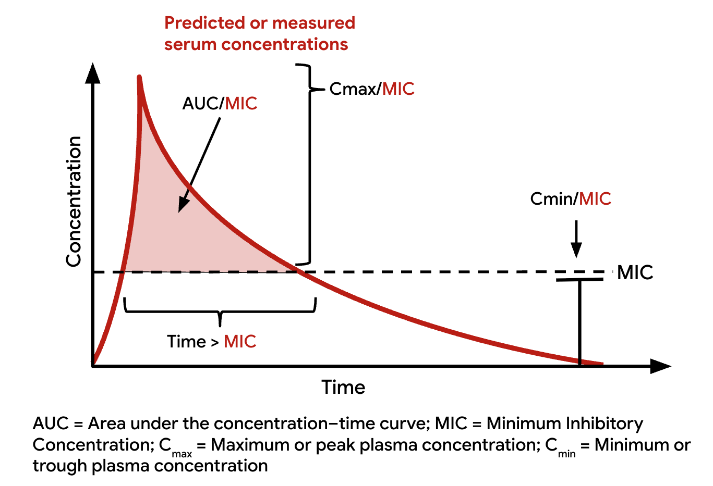
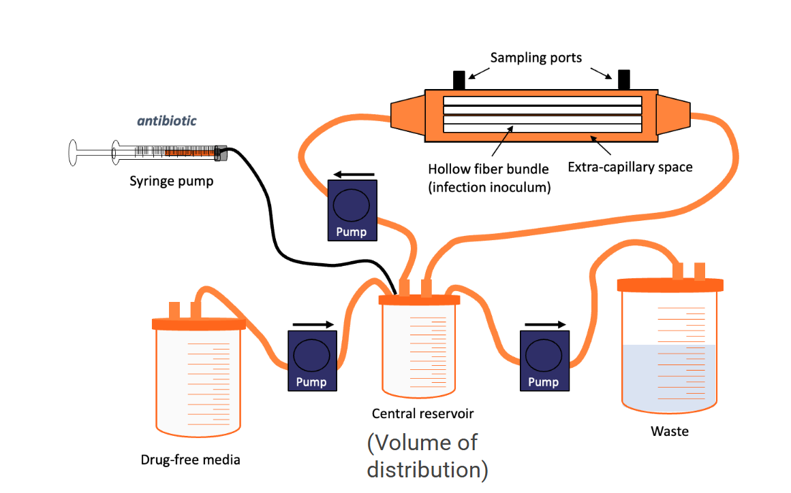
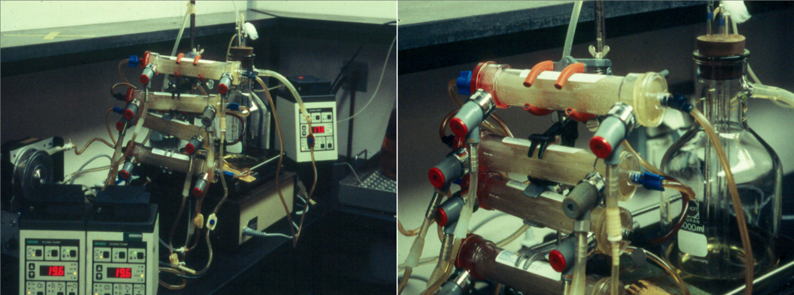
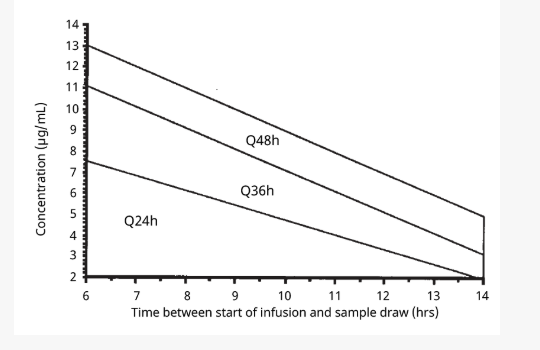

Pharmacokinetics and Pharmacodynamics of Antiinfective Agents
1 Introduction
Pharmacokinetics (PK) and pharmacodynamics (PD) systems analyses provide the mathematical framework within pharmacology to identify antiinfective dosing regimens with the greatest risk-benefit ratio [1].
NoteKey Definitions
Pharmacology: The study concerning a compound related to its history, source, physical and chemical properties, compounding, biochemical and physiologic effects, mechanisms of action and resistance, absorption, distribution, metabolism, excretion, and therapeutic and other uses [1]
Pharmacokinetics (PK): Describes the process by which a drug enters and leaves the body based on absorption, distribution, metabolism, and excretion to define systemic exposure [2]
Pharmacodynamics (PD): Describes the biochemical and physiologic response of the drug and its mechanism of action [2]
PK-PD analyses are integrated to define the exposure response, where the response can be a measure of safety, efficacy, or emergence of resistance. Optimal dosing regimens rely on modeling and simulation to balance the probability of efficacy relative to safety thresholds [1,2].
ImportantUnique Aspects of Antiinfective PK-PD
Because antiinfective agents chiefly affect nonmammalian target sites, the doses of these agents tend to be an order of magnitude higher than those of other pharmacologic classes [6]. Another challenge involves reductions in potency of antiinfective agents over time due to emergence of resistance.
2 Pharmacokinetic Principles
The plasma or serum concentration-time curve represents complex physiologic processes that are simplified and visually represented by the concentration-time curve. The shape of this curve can be modified by altering the rates of drug entry, distribution, metabolic transformation, and elimination through intrinsic or extrinsic factors [7].


2.1 Absorption
Absorption describes the movement of drug from an extravascular space to an intravascular space [1]. For antiinfective agents, the two most common modes of drug administration that require absorption are the oral and intramuscular routes.
TipBioavailability
The amount of drug that reaches the systemic circulation is expressed as a percentage of the total amount that could have been absorbed. This percentage is defined as the drug’s absolute or relative bioavailability:
- Absolute bioavailability: Comparison of extravascular route with intravenous administration
- Relative bioavailability: Comparison of two different extravascularly administered dosage forms [1]
2.1.1 Factors Affecting Oral Absorption
A major process variable in oral drug absorption is the solubility and permeability of the compound in the gastrointestinal tract. Most drugs in development tend to be insoluble, requiring significant efforts through medicinal chemistry or pharmaceutical sciences for formulation development [8].
Oral absorption can be saturable or nonsaturable with factors such as:
- Degradation in the gut by acid or proteolysis
- Gut metabolism and first-pass liver drug metabolism by enzymes
- Influx and efflux transporters influencing the rate and extent of absorption
- Drug interactions with other compounds or food that may bind the drug or reduce solubility
NoteEnterohepatic Recirculation
Drugs and their conjugated metabolites can be secreted through the bile into the intestines and reabsorbed into circulation through deconjugation by gut flora, a process known as enterohepatic recirculation. This mechanism plays an important role in prolonging the elimination of drugs such as certain antibiotics, nonsteroidal antiinflammatory drugs, hormones, opioids, digoxin, and warfarin.
2.2 Distribution
The shape of the concentration-time curve is modeled most commonly using a proportionality constant known as the volume of distribution (Vd) and is termed the apparent volume of distribution (Vd/F) when the drug is administered by the extravascular route [9].
WarningImportant Concept
The Vd is not a real or physiologic volume, but rather a value that relates drug concentration in the system to the amount of drug present in that system. This system can be defined as a single compartment (Vd1) or as multiple compartments (Vd1, Vd2, … Vdn) to mathematically fit the shape of the concentration-time curve.
2.2.1 Factors Affecting Distribution
Factors that alter the physiologic distribution of drug into tissue include:
- Lipophilicity
- Partition coefficient of the drug between different types of tissues
- Blood flow to tissues
- pH and binding affinity to plasma proteins relative to tissue components [1]
Drug transporters play a role in defining the net drug concentration at the site of infection through influx and efflux transporters [10]. Transporter function can be influenced by genetic and environmental factors and thus varies from person to person.
2.2.2 Protein Binding Considerations
Drugs binding to serum proteins have a major influence on Vd:
| Drug Type | Binding Protein | Effect on Vd |
|---|---|---|
| Acidic drugs (β-lactams) | Albumin | Lower Vd (retained in plasma) |
| Basic drugs (macrolides) | α1-acid glycoprotein | Larger Vd (retained in tissues) |
ImportantClinical Pearl
Protein binding is an important consideration for antimicrobial agents because unbound drug is available to exert antimicrobial activity, and in vitro methods used to assess potency through the MIC evaluate unbound drug [11].
2.3 Metabolism
Drug metabolism reactions are classified as either phase I or phase II reactions [2,8].
2.3.1 Phase I Reactions
Phase I reactions can transform a substrate into an active or inactive metabolite and in some cases into a more toxic substrate. Phase I reactions generally are under the control of the cytochrome P-450 (CYP) system.
NoteCYP Enzyme System
- CYP enzymes are heme-containing proteins located in the endoplasmic reticulum of a variety of cell types, most abundantly in the liver
- CYP enzymes are controlled by a superfamily of genes classified into families according to their amino acid sequences
- The term CYP3A4 designates a mammalian enzyme (CYP) family 3, subfamily A, gene 4
Primary CYP Enzymes for Drug Metabolism (in decreasing order of importance):
- CYP3A
- CYP2D6
- CYP2C
- CYP1A2
- CYP2E1
2.3.2 Genetic Polymorphism
CYP enzymes are affected by many factors that stimulate or inhibit their ability to metabolize drugs. Genetic factors have been shown to result in a phenomenon called polymorphism [12].
For some CYP enzymes, such as CYP2D6, distinct metabolic patterns exist in a population:
- Poor metabolizers
- Intermediate metabolizers
- Extensive metabolizers
- Ultrarapid metabolizers
TipClinical Application: Ritonavir Boosting
Ritonavir has been used to decrease the activity of CYP3A isozymes in the gut, allowing greater absorption of other protease inhibitors (PIs) such as tipranavir and darunavir and reducing the overall cost of therapy. The recently approved treatment for COVID-19, Paxlovid, relies on ritonavir-boosted nirmatrelvir [13].
2.3.3 Phase II Reactions
Phase II reactions, which also show genetic polymorphism, involve conjugation of the parent compound with larger molecules, which increases the polarity of the parent molecule and permits excretion. Although phase II reactions generally lead to inactivation of the parent compound, occasionally conjugation increases the potency of the parent compound or results in the formation of another biologically active compound.
WarningAntibiotic-Drug Interactions
Oral antibiotics that disrupt intestinal microflora such as ciprofloxacin, amoxicillin-clavulanic acid, metronidazole, and trimethoprim-sulfamethoxazole have been shown to result in subtherapeutic MPA (mycophenolic acid) concentrations and increase the risk of organ rejection. This highlights the importance of considering the impact of gut flora disruptions on the pharmacology of medications with a narrow therapeutic index.
2.4 Elimination
The AUC over a specific time period is proportional to the dose administered (for drugs that follow linear PK) and inversely related to total drug clearance (CLT) [7]. CLT reflects the unit volume of a system that is cleared of drug per unit time (e.g., L/h).
2.4.1 Routes of Elimination
Renal Clearance (CLr): Describes the volume per unit time that the body eliminates a substance via the kidneys, through various mechanisms including:
- Glomerular filtration
- Tubular secretion (an energy-dependent, transporter-mediated process)
- Tubular reabsorption
Nonrenal Clearance (CLnr): Describes the sum of clearance pathways that do not involve the kidneys [2], including:
- Biliary tree (e.g., ceftriaxone)
- Intestine (e.g., azithromycin)
- Skin and lungs (respiration)
- DNA chelation and inactivation (e.g., aminoglycosides in cystic fibrosis sputum)
3 Pharmacokinetic Abbreviations Reference
| Type of Term | Abbreviation | Definition |
|---|---|---|
| Pharmacokinetics | ||
| Absorption | F | Bioavailability: absolute bioavailability |
| Ka | Absorption rate constant | |
| Distribution | Vd | Volume of distribution |
| Vd/F | Apparent volume of distribution | |
| Vss | Volume of distribution at steady state | |
| CLD | Distributional clearance | |
| Metabolism | Km | Drug concentration at which enzyme system metabolizes at half of Vm |
| Vm | Maximal metabolic capacity (Michaelis-Menten) | |
| CYP | Cytochrome P-450 enzyme systems | |
| Elimination | CLr | Renal clearance |
| CLnr | Nonrenal clearance | |
| CLT | Total clearance | |
| t½ | Half-life | |
| Pharmacodynamics | ||
| MIC90 | Minimal inhibitory concentration for 90% of isolates | |
| EC50 | Effective concentration for 50% of all isolates | |
| MPC | Mutant prevention concentration | |
| MSW | Mutant selection window | |
| IC50 | Inhibitory concentration for 50% of isolates | |
| Cmax/MIC | Peak antimicrobial serum concentration to MIC ratio | |
| AUC/MIC | 24-h area under the serum antimicrobial concentration-time curve to MIC ratio | |
| AUIC | 24-h area under the inhibitory curve | |
| T > MIC | Time that serum antimicrobial concentrations are above the organism’s MIC | |
| PAE | Postantibiotic effect |
4 Antimicrobial Potency
Antimicrobial agents may be bacteriostatic at low concentrations but bactericidal at high concentrations. These bacteriostatic and bactericidal concentrations have been used to quantitate the activity of an agent against an organism [14].
4.1 Methods to Measure Antimicrobial Activity
Approaches to measure antimicrobial activity have broadly included:
- Agar-based macrodilution and microdilution systems: Can include disk-diffusion of an antibiotic to create a zone of inhibition (diameter measurement)
- Broth dilution systems: Allow measurement of an MIC based on a doubling-dilution (log2) scale (e.g., 0.5, 1, 2, 4 mg/L)
- Gradient strips: Create antimicrobial gradients to quantitate the MIC on an arithmetic scale
NoteKey Microbiological Parameters
- MIC90: MIC for 90% of all surveyed isolates of a bacterial species
- IC50 or EC50: Inhibitory or effective concentration for 50% of all surveyed isolates of a strain of virus
- Minimal bactericidal concentration: The lowest concentration at or above the MIC required to kill a microorganism
4.2 Limitations of In Vitro Parameters
Although these in vitro parameters are helpful epidemiologically, they represent determination of fixed values that cannot fully reflect the dynamic in vivo process such as [15]:
- The time course of activity or the potential for persistent antiinfective effect after the concentration at the site has decreased below the MIC or minimal bactericidal concentration
- The interaction of the immune system with the drug and pathogen
- Exposures necessary to prevent the development of resistance or organism mutation
ImportantCombination Drug Use
Importantly, these parameters reflect specific drug-organism in vitro measurements that cannot reflect the combination drug use profile as empirical therapy and for documented polymicrobial infections [14].
4.3 Drug Interactions: Synergism, Additivity, and Antagonism
Although antiinfective agents can be used individually, in many instances they are used together:
- Synergism: Activity of two or more antiinfective agents given together that is greater than the sum of activity had the agents been given separately
- Additivity (also known as indifference): Activity of two or more agents together that equals the sum of activity of each agent
- Antagonism: Activity of two or more antiinfective agents given together that is lower than the activity of the most active agent given separately
Combinations of agents are used to enhance efficacy, rate, and extent of organism killing or to reduce the development of resistance but can have conflicting results [16].
5 Pharmacodynamics Indices
PD combines PK parameters and microbiology parameters to describe drug effect in relation to some measure of exposure. These PK measures of exposure include [15]:
- Maximal concentration (Cmax; peak)
- Minimal concentration (Cmin; trough)
- AUC integrated over a specified time period (AUC0–t) or infinity (AUC0–inf)
- Duration of time that the concentration exceeds a threshold value
5.1 The Three Primary PK-PD Indices
In the case of antiinfective agents, three PK-PD indices based on serum or plasma concentrations have been associated with efficacy:

| PK-PD Index | Description | Associated Antibiotic Classes |
|---|---|---|
| Cmax/MIC | Peak antimicrobial concentration to MIC ratio | Aminoglycosides, fluoroquinolones, daptomycin |
| AUC/MIC | 24-h area under the curve to MIC ratio | Fluoroquinolones, vancomycin, glycopeptides |
| T > MIC | Time that concentrations remain above the MIC | β-lactams, carbapenems, cephalosporins |
TipCorrelation Between Indices
Antimicrobial agents deemed to be concentration dependent with a good correlation to Cmax/MIC also have some degree of correlation to AUC/MIC. The same phenomenon is true for antimicrobial agents deemed to manifest time-dependent PK-PD [17].
5.2 Distribution and Elimination Phases
The rise and fall in drug concentrations are often evaluated through blood sampling and most often have two phases:
- Distribution phase (α phase): A more rapid initial decline referred to as the distribution phase
- Elimination phase (β phase): Followed by a reduction in the slope referred to as the elimination phase
This second phase in the concentration-time profile often coincides with the concentration profile expected in the interstitial space of tissues with the scale of this profile dependent on the degree of plasma protein binding.
6 Methodology for Study of PK-PD Effects
6.1 In Vitro Models
The most widely accepted model used to study in vitro PK-PD effects of antiinfective agents is the “hollow fiber model” system [18,19].
NoteHollow Fiber Model
- Uses a cartridge composed of thousands of hollow porous fibers sealed at each end
- Growth media enters one end and passes through the inside of the fibers to the opposite end
- Microorganisms or virally infected cells are inoculated on the outside of the fibers and multiply in the space between the fibers (extracapillary space)
- Antiinfective agents, nutrients, and metabolic waste can cross the fibers but the larger microorganisms cannot
Advantages: - Can expose microorganisms to predetermined dynamic or static concentrations simulating expected PK in humans - Allows sampling via a port to quantify microorganism load and drug concentrations - Offers control over bacterial inoculum and drug concentration-time profiles
Limitations: - Does not currently assess the effects of the immune system on organism killing or growth inhibition - Results in relatively high organism loads and lack host immune function - May predict higher effective doses than would be defined by immune intact animal models


6.2 Animal Models
Rodent models are often used to determine PK-PD by first making the animal neutropenic before infection to improve the model’s reliability and reproducibility. Craig et al. showed that the presence of neutrophils may affect antibacterial activity with fluoroquinolones, penicillin, clindamycin, and doxycycline [20].
Advantages: - Allow for frequent sampling of blood and tissue - Allow a broad dosage range to be investigated along with a wide range of organism inocula - Allow investigation of variation in a single parameter at a time
Limitations: - Lack of standardization of the inoculum size (often large inocula are required to produce infection) - Faster rate of drug elimination in small mammals compared with humans - AUC values may not replicate human concentration-time profiles
6.3 Clinical Trials
Preclinical and early clinical (phase I and II) PK-PD relationships are often being applied to justify dose selection for the two phase III clinical trials that are necessary to gain regulatory approval to market a drug [15,21].
WarningLimitation of Phase III Trials
The high cost of phase III trials limits significant modification of the study design to rectify and retest assumptions about dose selection. Hence most human trials that have defined PK-PD relationships have been based on the retrospective review of postmarketing drugs or post hoc subgroup analyses of prospectively collected data.
Clinical trials have used three measures of assessment to relate to antimicrobial PK-PD [22]:
- Clinical outcome
- Microbiologic cure
- Development of resistance
7 Concentration-Dependent vs. Time-Dependent Killing
7.1 Concentration-Dependent Killing Agents
Concentration-dependent killing agents include:
- Aminoglycosides
- Fluoroquinolones
- Metronidazole
- Daptomycin
For these agents, higher Cmax/MIC ratios are required for gram-positive pathogens compared with gram-negative pathogens.

TipFluoroquinolone PK-PD and Resistance
Evaluation of the influence of PK-PD on bacterial resistance has been best characterized with fluoroquinolones and aminoglycosides. Blaser et al. examined the Cmax/MIC ratio for enoxacin and netilmicin against various gram-negative organisms. Regrowth of organisms occurred in all cultures when enoxacin or netilmicin attained ratios lower than 8. On redosing of these antibiotics after bacterial regrowth, no killing was seen because of the development of resistance [23].
7.2 Time-Dependent Killing Agents
Time-dependent killing agents include:
- Penicillins
- Cephalosporins
- Aztreonam
- Vancomycin (for which AUC/MIC is predictive)
- Carbapenems
- Macrolides
- Linezolid
- Tigecycline
- Doxycycline
- Clindamycin
For agents active against gram-negative bacteria, the rate of kill is maximized when concentrations at the site of the bacterial infection are typically four times higher than the MIC of the organism [3].
ImportantT > MIC Thresholds
A report using animal studies with Streptococcus pneumoniae in which treatment was performed with penicillins or cephalosporins showed:
- When T > MIC was ≤20% of the dosing interval → 100% mortality
- When T > MIC was 40% to 50% of the dosing interval → 0% to 10% mortality [15]
8 Postantibiotic Effect
After a short exposure of bacteria to an antimicrobial agent, complete or partial suppression of bacterial growth may last for a period of time after the drug is removed. This phenomenon is termed the postantibiotic effect (PAE) [3].
| Antibiotic Class | PAE Against Gram-Negative | PAE Against Gram-Positive |
|---|---|---|
| Aminoglycosides | 2–6 hours | 2 hours |
| Fluoroquinolones | 2–6 hours | 2 hours |
| β-Lactam antibiotics | Little or no PAE | 2 hours |
NoteClinical Implications of PAE
- An agent with a long PAE can be dosed less frequently than an antimicrobial agent lacking a PAE
- An agent with little or no PAE may be most effective if given as a continuous infusion so that the serum concentration always exceeds the MIC
Factors that affect the in vitro PAE include:
- Specific combinations of antimicrobial agents
- Antimicrobial concentration
- Duration of antimicrobial exposure
- pH
- Size of inoculum
- Type of growth medium
- Bacterial growth phase
9 Applied Clinical Pharmacokinetics and Pharmacodynamics
The exposure-response relationship predictive of effect and safety may not be complete when an antiinfective agent is first marketed. Over the past 50 years, the principles outlined earlier have been applied to improve the clinical management of patients through design of alternative drug dose regimens that take advantage of the exposure-response relationship [21].
These strategies have broadly included:
- Higher-dose extended-interval dosing: For concentration-dependent antimicrobial agents
- Continuous or extended infusions: For time-dependent antimicrobial agents
TipPrecision Medicine Approach
Conceptually, use of more intensive dosing regimens at treatment initiation followed by dose titration with clinical improvement or worsening would be ideal. Testing this approach requires more complex covariate-adjusted response-adaptive designs of antiinfective agents with a companion biomarker of response to tease out true differences between regimens [24].
9.1 Higher-Dose Extended-Interval Dosing
This dosing strategy has primarily been used to optimize the PK-PD profile of concentration-dependent antimicrobial agents such as:
- Tobramycin
- Levofloxacin
- Daptomycin
- Oritavancin
- Dalbavancin
- Azithromycin
9.1.1 Aminoglycoside Extended-Interval Dosing
High-dose extended-interval aminoglycoside dosing serves as the model for validation of this approach [25]:
| Parameter | Traditional Dosing | Extended-Interval Dosing |
|---|---|---|
| Gentamicin/Tobramycin dose | 1 mg/kg TID | 5–7 mg/kg once daily |
| Target Cmax/MIC | Variable | 8–10 |
| Rationale | Maintain levels | Optimize PK-PD, minimize toxicity |

ImportantClinical Target for Tobramycin
The objective of the tobramycin regimen of 5–10 mg/kg once daily is to achieve a serum concentration of 16–20 mg/L 1.5–2 hours after a half-hour infusion (postdistribution phase). We seek to achieve a serum Cmax/MIC ratio of 8–10, based on an MIC90 of tobramycin against P. aeruginosa of 2 mg/L because this PK-PD index has been correlated to predict clinical success [27].
9.1.2 Front-Loaded Regimens
The application of higher doses at treatment initiation has more recently been referred to as front-loaded regimens, based on similar theories to suppress tumor growth [28].
Examples include:
- Oritavancin: Single 1200 mg dose shown to have similar safety and efficacy as daily administration (200 mg for 3–7 days) for complicated skin and soft tissue infections [29]
- Azithromycin: 5-day treatment course (500 mg loading, then 250 mg × 4 days) approved for community-acquired pneumonia
- Rifampin: Higher dose of 15 mg/kg/day versus standard 10 mg/kg/day studied in tuberculous meningitis [30]
9.2 Continuous-Infusion and Extended-Infusion Regimens
The effects of intermittent, extended, and continuous infusion on the serum concentration time profile are illustrated in ?@fig-infusion-comparison.
NoteKey Principle
Concentrations above a threshold concentration (e.g., 8 mg/L) are maintained for the longest period of time with the use of an initial combination of a short infusion (loading dose) followed by a continuous infusion. As a consequence, concentrations can be maintained above this threshold with a 2-g/day regimen compared with a 3-g/day regimen (30% lower total daily dose).
9.2.1 Loading Dose Importance
Use of a continuous infusion regimen without a loading dose will lead to a delay in the time that the concentration exceeds a threshold. Martinez et al. reviewed this topic and highlighted the importance of achieving effective concentrations at treatment initiation when the organism load is expected to be at its highest [21].
9.2.2 Clinical Evidence for Extended Infusions
A systematic review and meta-analysis of extended and continuous infusion of piperacillin-tazobactam and carbapenems based on nonrandomized studies suggested that these dosing approaches may be associated with a lower risk for mortality compared with shorter intermittent infusions [31].
| Study Type | Finding |
|---|---|
| Meta-analysis of prolonged-infusion piperacillin-tazobactam | 1.46-fold lower odds of mortality with prolonged infusions [32] |
| BLING-II trial (piperacillin-tazobactam, meropenem) | Comparable outcomes; no definitive superiority [33] |
| BLISS trial | Comparable outcomes between continuous and intermittent β-lactam infusion [34] |
WarningImplementation Challenges
Surveys suggest that translation or acceptance of this dosing paradigm still requires a consensus guideline, education, and acceptance in the United States and abroad.
9.3 Dose-Refinement Considerations
Selection of a specific antiinfective dosing regimen relies on the assumption that a dose-response relationship exists in support of this regimen [35]. The regimen that is approved for clinical use is the population average dose that maximizes the probability of clinical effect.
ImportantLimitation of Population-Based Dosing
The optimal dose of an antiinfective agent for every specific population (e.g., pregnant patients, patients receiving dialysis, pediatric patients) is not known when it is first approved for clinical use. Therefore a system to aid dose selection or refinement that is necessary to calculate the optimal dose has developed.
9.3.1 Therapeutic Drug Monitoring (TDM)
The clearest example of dose refinement is documented with the triazole antifungal agents, owing to high interpatient variability in drug absorption and metabolism:
- Itraconazole and posaconazole: Unpredictable oral absorption necessitates TDM
- Voriconazole: Metabolized by CYP2C19 isoenzymes encoded by a polymorphic gene; common coadministered drugs such as omeprazole can inhibit this isoenzyme system
NoteTDM Practice Guidelines
The most recent practice guidelines for the diagnosis and management of aspergillosis include clinical scenarios in which TDM of voriconazole, itraconazole, and posaconazole is justifiable.
9.3.2 Vancomycin TDM Evolution
In practice, TDM of the aminoglycosides and vancomycin is most common, but definitions of the target exposure ranges associated with effect and toxicity have changed over time.
TipVancomycin AUC/MIC Target
Let us assume that a vancomycin AUC/MIC target >400 h−1 is associated with a higher probability of effect against a pathogen with a modal MIC90 of 1 mg/L. A 2-g daily dose achieves a median AUC of 400 mg · h/L in a population and so represents the average population dose.
Clinical scenario: A patient is treated empirically with 2 g/day but is then determined to be infected with MRSA having a vancomycin MIC of 0.5 mg/L. Should we reduce the dose in half to achieve an AUC of 200 mg · h/L?
The answer is most likely no. Alternatively, if the MIC was 2 mg/L, should we double the daily dose? The answer may be yes, but we should also expect the risk for toxicity to increase.
We expect the current practice of vancomycin TDM to evolve from simple measurement and dose adjustment based on trough concentrations to one that considers AUC estimation using two serum samples or a single serum sample with Bayesian analysis.
12 Conclusions
Optimal dose selection of an antiinfective agent for an individual patient is an indispensable goal of clinical practice. The study of the interrelationship between drug exposure and response through PK-PD analyses is now an established component of antiinfective drug development.
ImportantKey Takeaways
PK-PD provides a framework to follow a pathway that integrates information from in vitro, in vivo, clinical, and in silico experiments to define a dosing regimen that increases the probability of effect and reduces the probability of toxicity in a population
Various nonpharmacologic factors can influence efficacy and safety-related outcomes in individuals; these unmeasured or immeasurable factors can confound our assessment of the “true” exposure-response relationship
Clinical use of an agent in populations underrepresented in early studies leads to an identification of pharmacologic and nonpharmacologic factors that influence outcome
Our understanding evolves with the clinical use of an agent; continued innovations in genomics, assays, and computer software capabilities will foster individualized antiinfective dose selection
The interplay between the gut microbiome and antiinfective drugs is imperative for advancing our comprehension of pharmacomicrobiomics, with the ultimate aim of translating these insights into practical clinical recommendations
13 References
1.
Buxton I, Benet L. Pharmacokinetics: The dynamics of drug absorption, distribution, metabolism, and elimination. Goodman and Gilman’s: The Pharmacological Basis of Therapeutics 2018.
2.
Blumenthal D, Garrison J. Pharmacodynamics: Molecular mechanisms of drug action. Goodman and Gilman’s: The Pharmacological Basis of Therapeutics 2018.
3.
Craig W. Pharmacokinetic/pharmacodynamic parameters: Rationale for antibacterial dosing of mice and men. Clin Infect Dis 1998;26(1):1–10.
4.
Drusano G. Pharmacokinetics and pharmacodynamics of antimicrobials. Clin Infect Dis 2007;45:S89–S95.
5.
Craig WA. Pharmacokinetic/pharmacodynamic parameters: Rationale for antibacterial dosing of mice and men. Clinical Infectious Diseases 1998;26(1):1–10. Available from https://academic.oup.com/cid/article-lookup/doi/10.1086/516284
6.
Silver L. Challenges of antibacterial discovery. Clin Microbiol Rev 2011;24(1):71–109.
7.
Vieira M, Kim M, Shebley M. Population pharmacokinetic model selection for drug development. J Pharmacokinet Pharmacodyn 2014;41:1–16.
8.
Burger D, Aarnoutse R. Clinical pharmacology of antiretroviral agents. Antimicrob Agents Chemother 2018.
9.
Toutain P, Bousquet-Melou A. Volumes of distribution. J Vet Pharmacol Ther 2004;27:441–453.
10.
Gandhi M, Greenblatt R, Bacchetti P, et al. A single-nucleotide polymorphism in CYP2B6 leads to >3-fold increases in efavirenz concentrations in plasma and hair among HIV-infected women. J Infect Dis 2012;206:1453–1461.
11.
Craig W, Kunin C. Significance of serum protein and tissue binding of antimicrobial agents. Annu Rev Med 1977;27:287–300.
12.
Karczewski K, Daneshjou R, Altman R. Chapter 7: pharmacogenomics. PLoS Comput Biol 2012;8(12):e1002817.
13.
Hammond J, Leister-Tebbe H, Gardner A, et al. Oral nirmatrelvir for high-risk, nonhospitalized adults with covid-19. N Engl J Med 2022;386:1397–1408.
14.
Turnidge J, Paterson D. Setting and revising antibacterial susceptibility breakpoints. Clin Microbiol Rev 2007;20(3):391–408.
15.
Rizk M, Bhavnani S, Galen J, et al. Consideration for dose selection and clinical pharmacokinetic/pharmacodynamic studies for antibacterial agents at the current crossroads. Clin Pharmacol Ther 2019;106(3):510–511.
16.
Torella J, Chait R, Kishony R. Optimal drug synergy in antimicrobial treatments. PLoS Comput Biol 2010;6(6):e1000796.
17.
Tam V, Nikolaou M. A novel approach to pharmacodynamic assessment of antimicrobial agents: New insights to dosing regimen design. PLoS Comput Biol 2011;7(1):e1001043.
18.
Blaser J, Stone B, Groner M, Zinner S. Comparative study with enoxacin and netilmicin in a pharmacodynamic model to determine importance of ratio of antibiotic peak concentration to MIC for bactericidal activity and emergence of resistance. Antimicrob Agents Chemother 1985;27(3):343–349.
19.
Bulitta J, Hope W, Eakin A, et al. Generating robust and informative nonclinical in vitro and in vivo bacterial infection model efficacy data to support translation to humans. Antimicrob Agents Chemother 2019;63(5):e02307–18.
20.
Kiem S, Schentag J. Interpretation of antibiotic concentration ratios measured in epithelial lining fluid. Antimicrob Agents Chemother 2002;52:24–36.
21.
Martinez M, Papich M, Drusano G. Dosing regimen matters: The importance of early intervention and rapid attainment of the pharmacokinetic/pharmacodynamic target. Antimicrob Agents Chemother 2012;56(6):2795–2805.
22.
Scaglione F, Paraboni L. Pharmacokinetics/pharmacodynamics of antibacterials in the intensive care unit: Setting appropriate dosing regimens. Int J Antimicrob Agents 2009;32(4):294–301.
23.
Blaser J, Stone B, Zinner S. Two compartment kinetic model with multiple artificial capillary units. J Antimicrob Chemother 1987;20:59–74.
24.
Musuamba F, Manolis E, Holford N, et al. Advanced methods for dose and regimen finding during drug development: Summary of the EMA/EFPIA workshop on dose finding (london 4-5 december 2014). CPT Pharmacometrics Syst Pharmacol 2017;6(7):418–429.
25.
Pai M, Rodvold K. Aminoglycoside dosing in patients by kidney function and area under the curve: The sawchuk-zaske dosing program revisited in the era of obesity. Diagn Microbiol Infect Dis 2014;78(2):178–187.
26.
Nicolau DP, Freeman CD, Belliveau PP, Nightingale CH, Ross JW, Quintiliani R. Experience with a once-daily aminoglycoside program administered to 2,184 adult patients. Antimicrobial agents and chemotherapy 1995;39(3):650–655. Available from http://www.ncbi.nlm.nih.gov/pubmed/7793867
27.
Moore R, Lietman P, Smith C. Clinical response to aminoglycoside therapy: Importance of the ratio of peak concentration to minimal inhibitory concentration. J Infect Dis 1987;155(1):93–99.
28.
Goldie J, Coldman A. Quantitative model for multiple levels of drug resistance in clinical tumors. Cancer Treat Rep 1983;67:923–931.
29.
Dunbar L, Milata J, McClure T, et al. Comparison of the efficacy and safety of oritavancin front-loaded dosing regimens to daily dosing: An analysis of the SIMPLIFI trial. Antimicrob Agents Chemother 2011;55(7):3476–3484.
30.
Heemskerk A, Bang N, Mai N, et al. Intensified antituberculosis therapy in adults with tuberculous meningitis. N Engl J Med 2016;374:124–134.
31.
Falagas M, Tansarli G, Ikawa K, Vardakas K. Clinical outcomes with extended or continuous versus short-term intravenous infusion of carbapenems and piperacillin/tazobactam: A systematic review and meta-analysis. Clin Infect Dis 2013;56(2):272–282.
32.
Rhodes N, Liu J, O’Donnell J, et al. Prolonged infusion piperacillin-tazobactam decreases mortality and improves outcomes in severely ill patients: Results of a systematic review and meta-analysis. Crit Care Med 2018;46(2):236–243.
33.
Dulhunty J, Roberts J, Davis J, et al. A multicenter randomized trial of continuous versus intermittent β-lactam infusion in severe sepsis. Am J Respir Crit Care Med 2015;192(11):1298–1305.
34.
Abdul-Aziz M, Sulaiman H, Mat-Nor M, et al. Beta-lactam infusion in severe sepsis (BLISS): A prospective, two-centre, open-labelled randomised controlled trial of continuous versus intermittent beta-lactam infusion in critically ill patients with severe sepsis. Intensive Care Med 2016;42(10):1535–1545.
35.
Dulhunty J, Roberts J, Davis J, et al. Continuous infusion of beta-lactam antibiotics in severe sepsis: A multicenter double-blind, randomized controlled trial. Clin Infect Dis 2013;56(2):236–244.